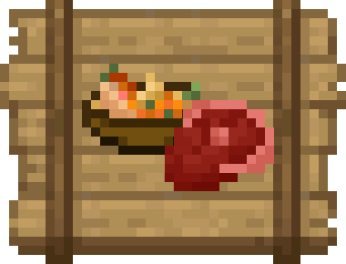

<!DOCTYPE html>
<html lang="en">
<head>
  <link rel="icon" href="../img/themes/active/favicon.png">
  <title>Happy New Year 2026 | Blog | Donne431</title>
  <meta name="viewport" content="width=device-width, initial-scale=1, maximum-scale=1" />
  <meta name="title" content="Happy New Year 2026 | Blog | Donne431">
  <meta name="description" content="Welcome to my website! I am Donne431, just a guy, who love made a modifications for games. I'm 16 years old, and I'm from Crimea, Russia (demi-island washed by the Black and Azov Sea). I also like to create almost any content for Minecraft, that is: mods, maps, resource packs, servers.">
  <meta name="keywords" content="Minecraft, Forts, Mods, Resourcepacks, Datapacks, Donne431">
  <meta name="theme-color" content="#4bb4f1">


  <script src="https://code.jquery.com/jquery-3.3.1.min.js"></script>
  <script src="https://cdn.jsdelivr.net/npm/handlebars@latest/dist/handlebars.js"></script>
  <script src="https://mcapi.us/scripts/minecraft.min.js"></script>
  <script src="../js/main.js"></script>
  <script src="../js/lang.js"></script>
  <script src="../config.js"></script>
  <script src="../js/lightbox.min.js"></script>

  <script>tosAgreed = true</script>

  <link rel="stylesheet" href="https://cdnjs.cloudflare.com/ajax/libs/font-awesome/6.7.1/css/all.min.css"/>
  <link rel="stylesheet" href="../css/style.css">
  <link rel="stylesheet" href="../css/blog.css">
  <link rel="stylesheet" href="../config.css">
  <link href="../css/lightbox.css" rel="stylesheet" media="all">

</head>


<body>

  <div id="target"></div>

  <script id="template" type="text/x-handlebars-template">

  <header>
    <div class="hero" id="hero">
      <a><h1 style="padding-top: 3%;"></h1></a>
    <p> </p>
    <div class="news-card" align="center">
      <a href="../" class="btn"><i class="fa-solid fa-house"></i> Home</a>
      <a href="../blog" class="btn"><i class="fa-solid fa-newspaper"></i> Blog</a>
      <a href="#links" class="btn" data-translate-key="universal.links"><i class="fa-solid fa-share"></i> Links</a>
    </div>
    <p> </p>
    </div>
  </header>

  <section class="dark" id="blog">
    <h1><i class="fa-solid fa-newspaper"></i> Blog</h1>
    <div id="news">
    <div class="news-card" align="center">
    <a>MISC</a><br>
    <a href="../img/blog/new-year-2026/preview.jpg" data-lightbox="roadtrip"></a>
    <h1 align="center">Happy New Year 2026</h1>
    <i>31.12.2025, 16:10</i><br>
    </div>
    <p>
    Hello to all the readers of this post, and happy upcoming 2026 to you!<br> <br>

    It’s been six months since my last post... What’s the reason for that? The main culprit is laziness, and to a lesser extent, my studies at the college and living in a dorm. What can I say about blog posts when my main mod,  Ice and Fire Delight, hasn’t received an update in about four months, and if we’re talking about proper updates, it’s been seven months. But let’s not dwell on the negative! <br> <br>

    A lot has happened this year: the launch of this  website, the release of my first client mods (even though I made them through AI...), five updates for  IaFD, 500k downloads of  IaFD on  Curseforge, and a total of 1 million downloads for my projects! Unfortunately, I wasn’t able to cover the last two events on the blog, but let’s hope my great laziness disappears next year! <br> <br>

    As for the promises I made for 2025, I fulfilled them! Well, almost; I did everything except for the relic mod, but to be fair, in that post, I mentioned it was uncertain whether I would even make it. <br> <br>

    Now, regarding promises for next year... Honestly, I’m not sure what I can promise that I will definitely accomplish... But okay, I’ll try to be optimistic, so here’s my list of promises: <br> 
      <ol> 
        <li> Updates for  Ice and Fire Delight;</li> 
        <li> Updates for  National Anthems;</li> 
        <li> Updates for  Classic Musical Discs;</li> 
        <li> [If IaF2 is released in the first half of the year] A new mod - Ice and Fire II Delight;</li>
        <li> [UNCERTAIN] A new mod - Ice and Fire Vinery;</li>
        <li> [UNCERTAIN] A detailed wiki for  Ice and Fire Delight;</li> 
        <li> [UNCERTAIN] Implement DevLog for  Ice and Fire Delight on the  website;</li> 
        <li> [UNCERTAIN] Fix critical (in my opinion) bugs in  Ice and Fire Delight;</li> 
        <li> [UNCERTAIN] Completely translate this  website.</li> 
      </ol> <br> 

    Let's hope these promises aren't empty. I'll also hope that in 2026 I can find a way to withdraw the money, although judging by events in 2022-2025, that's unlikely. <br> <br>


    
<!--     
    Привет всем читателям этого поста, перед началом, с наступающим 2026 годом вас!<br> <br>
    
    Прошло уже полгода с последнего поста... В чём же причина? Самое главное - лень, в меньшей степени - учёба в техникуме и проживание в общаге. Что уж говорить о постах в блоге, если по сути главный мой мод - Ice and Fire Delight не получал обновление месяцев 4, а если говорить про нормальные, то месяцев 7. Но ладно, не будем о грустном! <br> <br>

    За этот год много что произошло: запуск этого веб-сайта, выпуск моих первых клиентских модов (хотя я их сделал через ИИ...), целых 5 обновлений для IaFD, 500к скачиваний у IaFD на Curseforge и суммарно 1 миллион скачиваний у моих проектов! К сожалению последние 2 события я не смог осветить в блоге, но будем надеяться, что моя великая лень исчезнет в следующем году! <br> <br>

    Насчёт обещаний на этот 2025 год, по итогу я их выполнил! Ну, на самом деле почти, я сделал всё кроме мода на реликвии, но справедливости ради, в том посте, я говорил, что не факт, что я впринципе его сделаю. <br> <br>

    А вот насчёт обещаний на следующий год... Честно говоря, я не знаю, что такого я могу пообещать, что я точно сделаю... Но ладно, попытаюсь быть оптимистом и поэтому представляю вам данный список обещаний: <br>
        <ol>
          <li> Обновления для Ice and Fire Delight;</li>
          <li> Обновления для National anthems;</li>
          <li> Обновления для Classic musical discs;</li>
          <li> [Если IaF2 выйдет в первом полугодие] Новый мод - Ice and Fire II Delight;</li>
          <li> [НЕ ФАКТ] Новый мод - Ice and Fire Vinery;</li>
          <li> [НЕ ФАКТ] Подробное вики для Ice and Fire Delight;</li>
          <li> [НЕ ФАКТ] Реализовать DevLog для Ice and Fire Delight на сайте;</li>
          <li> [НЕ ФАКТ] Исправить критические (по моему мнению) баги в Ice and Fire Delight;</li>
          <li> [НЕ ФАКТ] До конца перевести этот веб-сайт;</li>
        </ol>
        <br> <br> 
      
    Будем надеяться, что эти обещания не будут пустыми. Также, я буду надеяться, что в 2026 году я смогу найти способ вывода денег, хотя судя по событиям в 2022-2025 годах, то это маловероятно. <br> <br>
    -->


    </p>
    <p align="center"><i class="fa-solid fa-user"></i> Donne431 (Author)</p>
    </div>
  </section>
  <section class="dark">
    <div class="news-card" align="center">
    <a href="../blog/unfreezing-projects_01.06.2025.html" class="btn2"><i class="fa-solid fa-arrow-left"></i> Previous post</a>
    <a href="../blog" class="btn2"><i class="fa-solid fa-newspaper"></i> Back to Blog</a>
    <!--<a href="../blog/unfreezing-projects.html" class="btn2"><i class="fa-solid fa-arrow-right"></i> Next post</a>-->
    </div>
  </section>

  <section class="light">
    <h1 data-translate-key="universal.links"><i class="fa-solid fa-share"></i> Links</h1>
    <div id="links" align="center">
      <a href="https://discord.gg/NQBhQRDEhF"></a>
      <a href="https://www.curseforge.com/members/donne431/projects"></a>
      <a href="https://modrinth.com/user/Donne431"></a>
      <a href="https://github.com/Donne431"></a>
      <a href="https://www.donationalerts.com/r/donne431"></a>
    </div>
  </section>

  <footer>
    <a>&copy; {{server_port}} {{server_name}}. All Rights Reserved.</br>{{server_name}} is not affiliated with or endorsed by Mojang Studios or Microsoft<br>{{server_ip}}</a>
    <a></a>
    
  </footer>
  </script>
  <script src="../js/license.js"></script>

</body>
</html>
